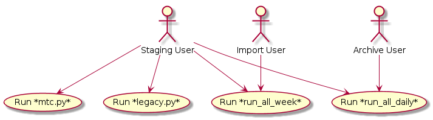

User Guide¶
Introduction¶
The purpose of this guide is to help the developer understand how to install and execute the script from this program. Location of the files will also be explained and also a brief overview of how the scripts are placed in different enviornments and the purpose.
System Requirements¶
- Python
- Unix
- Piwik (MySql, PHP, Piwik)
Python Requirements¶
- Python 2.6 - 2.7.6
- boto
- pyyaml
- mock (for unit testing)
Installation¶
To use any of the scripts that this package provides, it is required to install the boto python sdk and yaml modules. Make sure on your machine that python and pip is installed and run the following commands:
pip install boto
pip install pyyaml
After these modules are installed, all scripts should be compatible if the system meets requirements.
Running the Scripts¶
There are a total of 7 scripts that can be ran individually for different reasons. Each script will be listed below with a brief explanation of its purpose.
run_all_daily
Used for a daily cron import of all the sites. Is ran with no parameters.
./run_all_daily
run_all_weekly
Used to import large amount of data in a weekly basis. A date range is the only parameter needed.
./run_all_weekly start-date end-date
*start-date and end-date in format YYYY-MM-DD
stat.sh
Gets statistics for a site for a date specified. Site and date are parameters needed.
./stat.sh site date
*date in format YYYY-MM-DD
get_stats.sh
Gets statisitics for a site over a date range. Site and date range needed are parameters needed.
./get_stat.sh site start-date end-date
*start-date and end-date in format YYYY-MM-DD
create_csv.sh
Used to create csv files from statisitic files. No parameters needed, but .stat files from stat.sh or get_stats.sh must be present.
./create_csv.sh
core/mtc.py
Main script to do importing. Needs site and a date to import for parameters.
core/mtc.py site date
*date in format YYYY-MM-DD
core/legacy.py
Used to call mtc.py over a range of days at one day increments. Needs site and date range.
core/legacy.py site start-date end-date
*start-date and end-date in format YYYY-MM-DD
The main script to use will be core/mtc.py as it is the foundation for the other scripts. Be sure that all the scripts have an executable permission before running. Also, make sure to check core/.aws_config has all configuration values needed for Piwik and Amazon instances. (See Config section for more details.)
Configuration¶
For the main script mtc.py to work, there is configuration that needs to be set. The file core/.aws_config contains information this information for mtc.py. Following is a list of settings that can be changed, along with a brief description:
aws_push_access_key
Access key to amazon instance to upload successful imported files to.
aws_push_secret
Secret key to amazon instance to upload successful imported files to.
aws_pull_access_key
Access key to amazon instance to download files from.
aws_pull_secret
Secret key to amazon instance to download files from.
sites
A list of sites with their site id from the piwik interface to import for.
piwik_ip
The ip address to use for the import command to piwik.
Current Use¶
Currently the application is being used on three Amazon instances. Two of the instances are linked to an production Piwik database while the other is linked to a staging database. On each machine there is a bash script that is either triggered by a user or with a cron job. On each instance is the main files, mtc.py, mtc_classes.py, mtc_helpers.py, and legacy.py. On staging, all files contained in the github repository is present while on production only the main files and an corresponding bash script is.
The production instances are labeled archive and import. The archive instance is mainly used to run a cron of daily imports and sometimes legacy data. The import instance is used to import large amounts of legacy data. According to plan, once all legacy data comes in, the import instance will be taken down and only the archive instance will remain.
By this setup, the current use of the application is to have all the scripts to be tested on staging and passing only required scripts to both import and archive. The import instance currently uses run_all_week, while archive uses run_all_daily.
Below is a diagram that should assist in understanding how this application is used.
